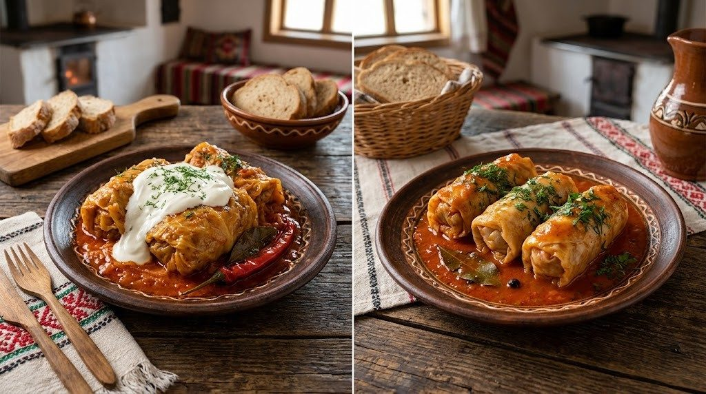

Câte calorii au sarmalele? Clasic și varianta light

ClasicLightSarmale clasice și sarmale light: comparația
Clasic: „Sarmale cu carne de porc și smântână”, catalogul de alimente NutriRO (180 kcal la 100 g), calculat la 244 g. Light: rețeta „Sarmale Light din Curcan” din aplicație.
Vezi cum se face rețeta lightIngrediente, mod de preparare și calculator de porții→Toate cifrele
Clasic: „Sarmale cu carne de porc și smântână” (catalogul de alimente). Light: rețeta „Sarmale Light din Curcan”.
| Clasic | Light | |
|---|---|---|
| Calorii la 100 g | 180 kcal | 82 kcal |
| Proteine la 100 g | 8,5 g | 7,4 g |
| Grăsimi la 100 g | 13,5 g | 3,2 g |
| Carbohidrați (fără fibre) la 100 g | 7,8 g | 5 g |
| O porție de 244 g | ≈ 439 kcal | ≈ 201 kcal |
Coloana „Clasic” are valorile la 100 g din catalogul de alimente NutriRO. Pentru rețeta light, greutatea porției e suma ingredientelor împărțită la numărul de porții, aceeași regulă ca în aplicație; după gătire greutatea se poate schimba puțin.
Ce s-a schimbat în rețeta light?
Rețeta păstrează gustul cunoscut: varză murată, ceapă, morcov, pastă de tomate, mărar, cimbru. Diferența vine din trei ingrediente:
- Carne tocată de curcan în loc de carne de porc (800 g la 10 porții).
- Puțin orez: 80 g de orez la toată oala, așa că umplutura e mai mult carne și legume.
- Fără smântână la servire și doar 10 g de ulei la 10 porții, folosite ca să înăbuși ceapa și morcovul.
Rețeta „Sarmale Light din Curcan” are 10 porții, se face în aproximativ 60 de minute (dificultate: mediu). O porție are ≈ 244 g și 201 kcal: 18 g proteine, 7,8 g grăsimi, 12,3 g carbohidrați (fără fibre) și 4,6 g fibre.
Vezi rețeta completă: ingrediente, mod de preparare și calculator de porții →
Ce schimbă caloriile unei porții de sarmale?
La sarmalele de casă, cele mai multe calorii vin din carnea grasă, din ulei și din smântâna pusă deasupra. Mămăliga de lângă se socotește separat. Dacă vrei să știi exact cât ai mâncat, cântărește porția și notează sarmalele și garnitura ca două alimente.
Cum le notezi în NutriRO?
- Ai mâncat sarmale clasice? Caută „Sarmale cu carne de porc și smântână” în catalogul de alimente și scrie câte grame ai mâncat.
- Le-ai gătit light? Deschide Rețete, caută „Sarmale Light din Curcan” și adaugă una sau mai multe porții în jurnal.
Întrebări frecvente
Câte calorii are o sarma?
Depinde de mărime. O sarma de 50 g cu carne de porc și smântână are aproximativ 90 kcal, după valoarea din catalogul NutriRO (180 kcal la 100 g). O sarma light din curcan de aceeași mărime are aproximativ 41 kcal.
Sunt sarmalele bune când ții dietă?
Pot intra într-o zi cu mai puține calorii dacă alegi carne slabă, puțin orez și renunți la smântâna de deasupra. Contează și porția: trei sarmale mari cu mămăligă și smântână pot depăși o masă obișnuită.
Mămăliga intră în calculul de mai sus?
Nu. Valorile sunt doar pentru sarmale. Mămăliga se notează separat, ca aliment distinct.
Toate rețetele de pe această pagină sunt în aplicația NutriRO, cu ingredientele, modul de preparare și caloriile pe porție. Aplicația e doar în limba română, pentru Android.
Valorile sunt orientative și depind de ingredientele și cantitățile folosite. NutriRO nu înlocuiește sfatul unui medic sau dietetician.